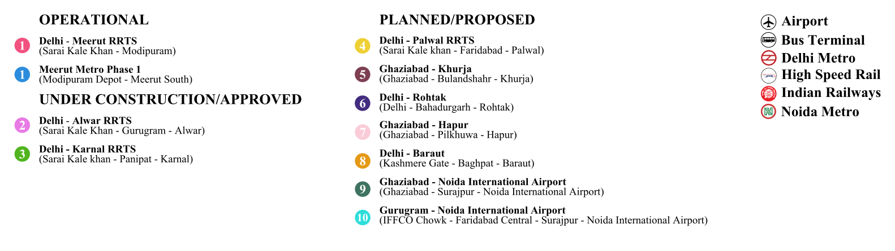
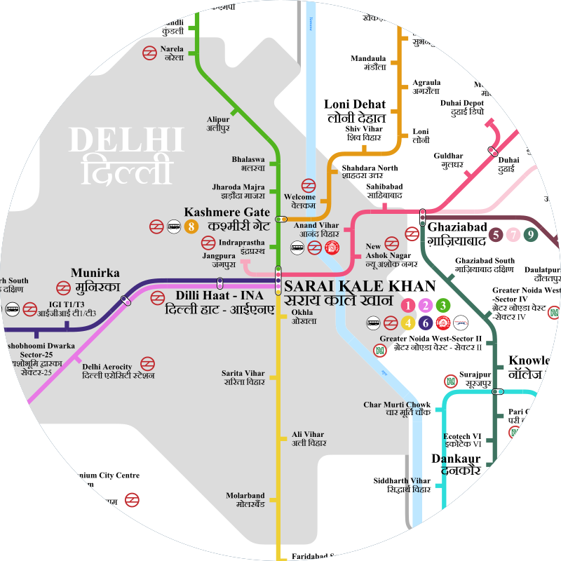
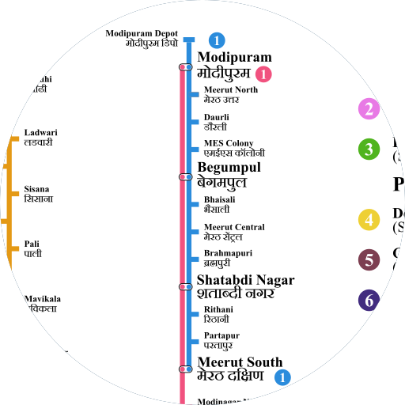
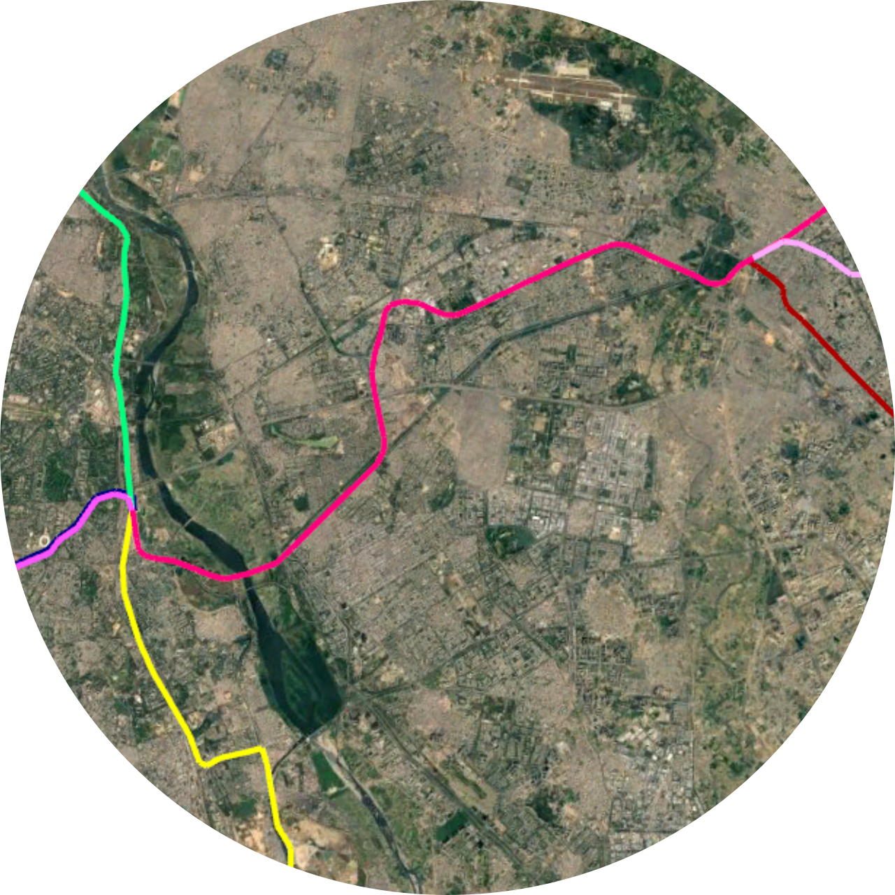
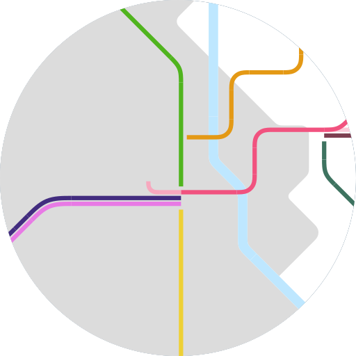

SPECULATIVE MAP OF DELHI REGIONAL RAPID TRANSIT SYSTEM (RRTS) AND MEERUT METRO
MAP BREAKDOWN

-All the lines are colour coded with their Logos.
-All Labels are in English and Hindi.

Sarai Kale Khan is the origin of 5 RRTS Line .

-The Delhi Meerut RRTS runs parallel to the Meerut Metro from Meerut South to Modipuram Depot.
-Meerut Metro is 23.6 kms connecting Modipuram and Meerut via Daurli, Begumpul among others.
-Meerut Metro is 23.6 kms connecting Modipuram and Meerut via Daurli, Begumpul among others.


-The geographical routes was identified using Google Maps.
-The stations were equally placed alone the lines.